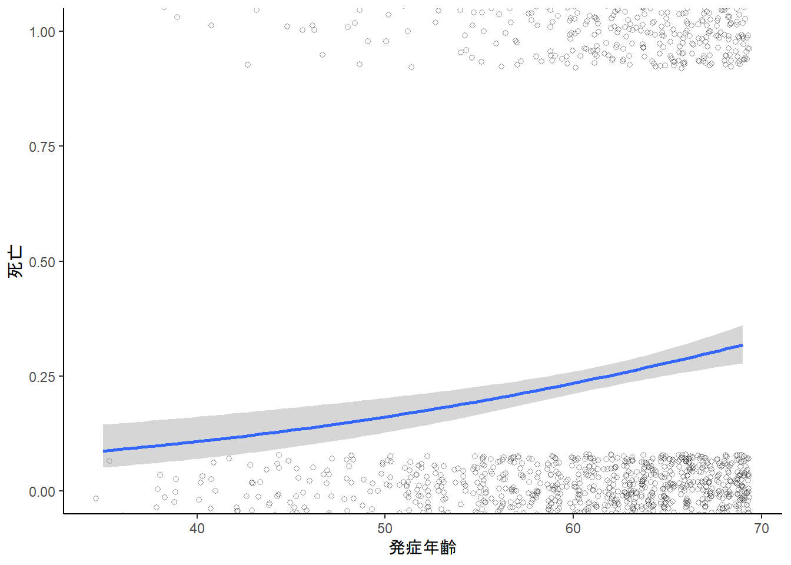

なんかいい感じのグラフ描きたいなって思いますよね。
ローデータがぶわーってプロットされてて、回帰直線・曲線がシューン！なってるやつ。
下のコードを使います。
library(ggplot2)
ggplot(data, #データを入れる
aes(x=valiable1, y=as.numeric(categolical1)))+ #x軸とy軸の変数を決める
geom_point(position=position_jitter(width=0.4,height=0.08),
alpha=.4,shape=21,size=1.5)+
#ローデータをプロット。ただし、同じ箇所の点が重なってプロットされるので、散らす設定する
stat_smooth(method="glm",
method.args = list(family="binomial"(link="logit")))+
#ロジスティック曲線。ここはきちんと書かないとうまく表示されない。
xlab("X軸の名前")+ylab("Y軸の名前")+ #x軸とy軸の名前を決める
coord_cartesian(ylim=c(0,1))+ #y軸の最小と最大の値を決める
theme_classic() #クラシックなデザインが好き すると、このようなものができます。

なんか違うけど、データがそうならちゃんとS字になるはずなんだ・・・